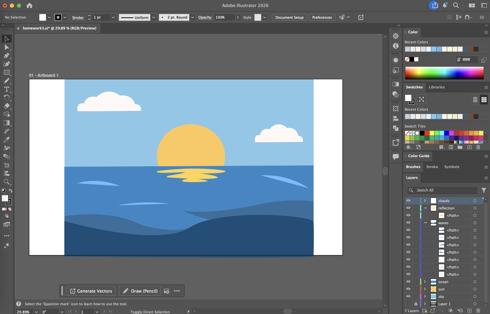

I chose a sunset over the ocean because I love the ocean and sunsets. The calm water and bright sun create a peaceful environment that I wanted to illustrate. I used simple shapes and colors in Illustrator to recreate the scene while keeping the main elements like the sun, reflection, and waves. This allowed me to transform the original photograph into a clean and simplified illustrated version of the environment.
